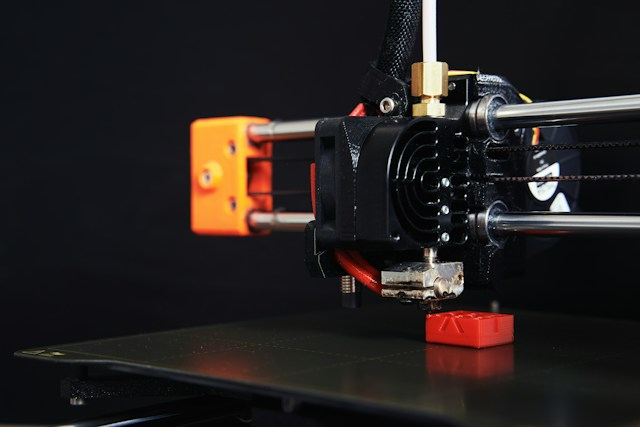
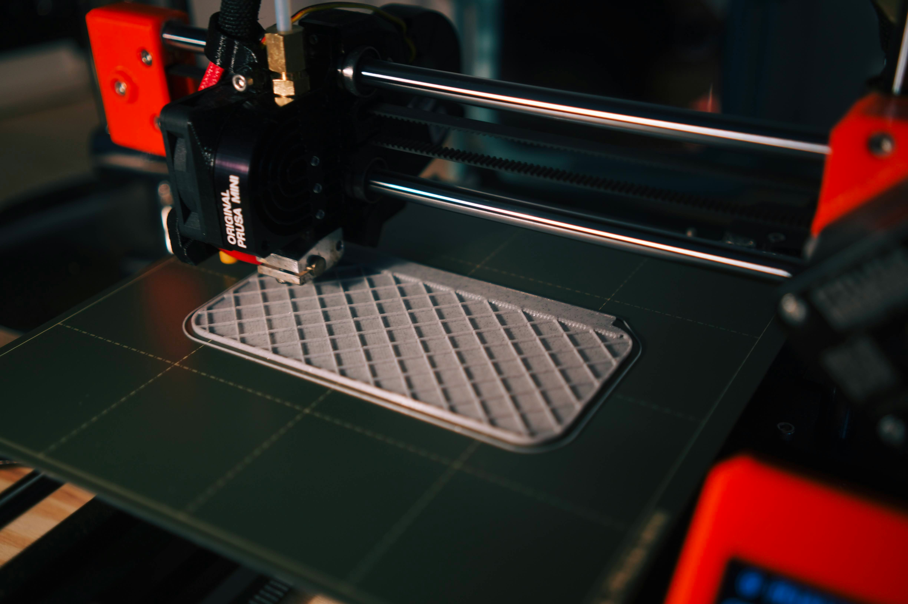
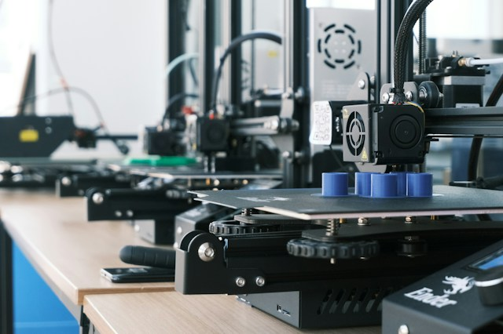
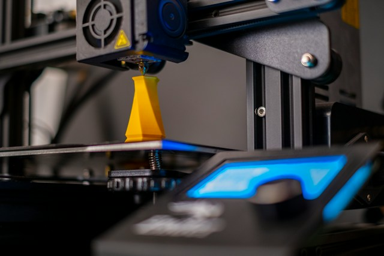

Gallery
Explore some examples of objects that can be created with our custom 3D printing service.




Media Sources
Photos via unsplash, sourced from Unsplash's photo library, licensed under the Unsplash License. The first image is by Christian Englmeier. The second image is by Fadir Celep. The third image is by Minku Kang. The fourth image is by Osman Talha Dikyar
A close up of a 3d printer by Jakub Zerdzicki, via pexels.com, licensed under CC BY 3.0.